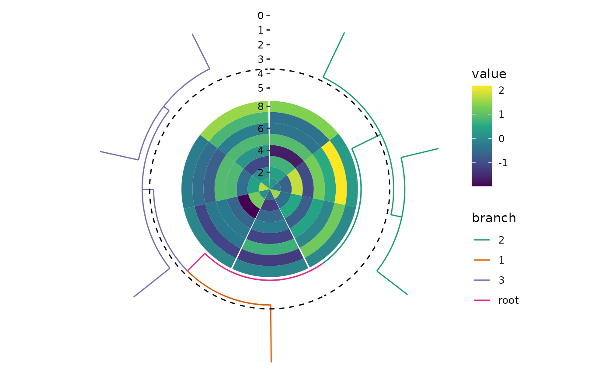

Determine the active context of circle layout
Source:R/layout-chain-circle-switch.R
circle_switch.Rd![[Stable]](figures/lifecycle-stable.svg)
Arguments
- radial
A
coord_circle()/coord_radial()object that defines the global parameters for coordinate across all plots in the layout. The parametersstart,end,direction, andexpandwill be inherited and applied uniformly to all plots within the layout. The parametersthetaandr.axis.insidewill always be ignored and will be set to"x"andTRUE, respectively, for all plots.- direction
A single string of
"inward"or"outward", indicating the direction in which the plot is added.outward: The plot is added from the inner to the outer.inward: The plot is added from the outer to the inner.
- what
What should get activated for the
circle_layout()? A single number or string of the plot elements in the layout. IfNULL, will remove any active context.- ...
These dots are for future extensions and must be empty.
Value
A circle_switch object which can be added to circle_layout().
Examples
set.seed(123)
small_mat <- matrix(rnorm(56), nrow = 7)
rownames(small_mat) <- paste0("row", seq_len(nrow(small_mat)))
colnames(small_mat) <- paste0("column", seq_len(ncol(small_mat)))
circle_discrete(small_mat) +
ggalign() +
geom_tile(aes(y = .column_index, fill = value)) +
scale_fill_viridis_c() +
align_dendro(aes(color = branch), k = 3L) +
scale_color_brewer(palette = "Dark2")
